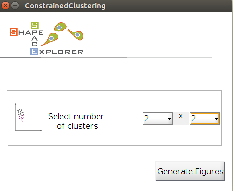
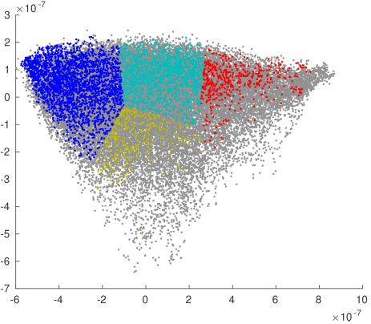
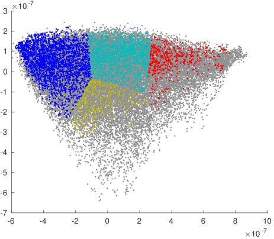

Shape Space Dynamic
Group analysis including OoSE data and cluster to cluster speed
First, please make sure that the Neural Network Toolbox is already installed. If not install it by clicking on the Home tab, click Add-Ons (stacked cubes icon) -> Get Add-Ons. This launches the Add-On Explorer that lists all toolboxes from MATLAB -> search for Neural Network and install it.
Then, run 5-Extended_Affinity_Propagation > Run_GroupAnalysisNEW.m 
Define the Groups by entering a group name, the stack number, and the associated analysis folder. A mapping between stack number and original file is in FileMapping.csv, generated in the cell segmentation step. Note: Avoid special characters and white space for group names as they are used later directly in figure paths, and may cause issues on some operating systems.
Note: stack numbers from one to five can be entered in several ways, such as
- 1-5
- 1,2,3,4,5 To delete a group, hold CTRL and click on the group, which produces a context menu with a delete option.
Now, configure the number of regions by selecting the number of rows and columns of the shape space to be divided.

Once Generate figures button is pressed, a GUI for Self Organizing Maps Neural Network for shape feature space clustering will be shown

For each group analysis, the program creates a new folder with time stamp, for example GroupAnalysis_2015-04-15_095836. The folder contains the following figures for each group:

Top left images shows shape space in gray with all shapes from all groups. The Top right image shows all shapes in region colour. Second row (from left to right) show group elements in cluster colour and non-group elements in grey for three different groups: untreated, siControl, siKIF1C, receptively. There is also a number of figures that are generated for each group. \  

Left figure shows the relative amount of shapes in the clusters, while right figure shows directionality as ratio of Euclidean distance over accumulated distance over different time lags for each group.

Left figure shows relative count of all groups with respect to region 1 (red), while right figure shows bar plots with absolute counts. For all bar plots, the numbers are written in text format in the Group Analysis folder.
Also, the averages speed in shape space is written in AvgSpeedPerGroup.csv. The unit of the speed is [unit in shape space/ time point difference]. If your movies took a frame every 5 minutes, than the respective unit would be [1 unit in shape space/ 5 minutes].
| Groups | AvgSpeed | Std | StandErr |
|---|---|---|---|
| Control | 2.75629709799542E-07 | 1.78215492166065E-07 | 4.98322139028005E-09 |
| Treatment1 | 2.75629709799542E-07 | 1.78215492166065E-07 | 4.98322139028005E-09 |
| Treatment2 | 2.75629709799542E-07 | 1.78215492166065E-07 | 4.98322139028005E-09 |
| All | 2.75629709799541E-07 | 1.78169027429995E-07 | 2.87631409658485E-09 |
Finally, you can select two regions (regionX and regionY) to calculate the speed of cells from regionX to regionY and vice versa, this by left-click anywhere at the target regions and once the regions have been selected, click-right anywhere in the figure to start the analysis.
Once done, the figure will be updated to show the number of regions that have been just selected.
Note that the cluster numbers will be shown on the clustered shape space once you do click-right.
Also, the system will produce four figures as demonstrated below


First row (from left to right) shows paths of cells form regionX (e.g., the first selected region) to regionY and from regionY to regionX, respectively. Second row (from left to right) shows the speed of cells from regionX to regionY and vise versa, respectively.
Sliced Shape Dynamics
For dynamic data, start with pre-processing and run 7-ShapeSpaceDynamics > Run_DynamicData_Generation.m and select the Analysis folder. After successful completion, the program should have generated the file:
- DynamicData.mat
The inside of the DynamicData.mat consists of the following variables:
- struc.track: contains the x,y coordinates for a cell id in shape space, for each frame.
- struc.track: contains the speed for a cell id, for each frame.
- struc.average_speed: a single number, containing the average speed for a cell id.
- Struc.angles: contains the angle of a cell id for each frame.
- Struc.av_displacement_direction: a single number showing the average displacement direction.
Note: InspectData from 1st step, permits only cells with continuous detection to have the same id. Hence, per definition each cell id has equally distant time points, or in other word, no gaps in time points.
Sliced Shape Space Average Dynamics
This program permits to see the average behaviour of slices in shape space. Run 7-ShapeSpaceDynamics > Run_Sliced_Dynamics.m
Select the Analysis folder and the number of slices for the x- and y-coordinate in shape space before clicking on Generate Figures
The program produces a figure, where for each slice in shape space a rose plot is plotted (see example below).

To see the rose plots per group, tick the last choice box (Analysis by Groups). Then, generate Figures

 The left figure shows the shape dynamics for the first group (siControl) while the right figure is for the second group (siKIF1C), where for each slice in shape space a rose plot is plotted.
The left figure shows the shape dynamics for the first group (siControl) while the right figure is for the second group (siKIF1C), where for each slice in shape space a rose plot is plotted.
Explore Average Behaviour of Clusters
Run 7-ShapeSpaceDynamics > Run_Clustered_Dynamics.m
 An example graph could look similar to the image below:
An example graph could look similar to the image below: